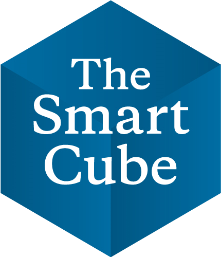

Resume
Work Experience
University of Illinois at Chicago August 2019-Current
Graduate Teaching Assistant Chicago, IL
- FIN 430 - Introduction to Money and Banking
- FIN 530 - Money and Banking
- FIN 494 - Options and Futures
- FIN 310 - Investments
Resourcefulness Leadership Communication Patience CreativitySinghal Realtors Nov'18 - Dec'19
Technology Consultant Delhi, India
- Increased the profit from reselling by 22% by building a buying recommendation system to predict house prices using machine learning libraries in Python
- Designed and developed effective lead management system using historical sales data to predict the properties that are most
- likely to sell within a time frame
- Designed their web interface UI using HTML, CSS, Bootstrap, and JQuery
- Offered data-driven recommendations aligned with overall company strategies and prioritized process improvement initiatives
Java Python SQL R Tableau HTML CSS JavascriptSinghal Realtors Jan'18 - Nov'18
Project Manager Delhi, India
- Created schedules and roadmaps for projects with budgets ranging from $100,000 to $5,000,000 using Waterfall Approach
- Monitored, coached and supervised team of 9 employees in 2018
- Received Excellence in Execution award (5% employees) for 10% timeline reduction for two projects in a row
Project Management Excel WorkZone Gridle Autocad RevitThe Smart Cube Sep'15 - Aug'16
Analyst Delhi, India
- Developed a ~8% cost reduction plan for raw material sourcing of frozen food for a Fortune 500 food services company
- Evaluated 5 source countries based on cost structure differences, pricing trends, competitive landscape and demand-supply scenario
- Conducted expert interviews to gain industry insights and identified 2 sustainable and lower-cost alternatives
Strategy Comparative Analysis supply chain strategy model assessment Planning ResearchDeloitte June'14 - Aug'15
Technology Consultant Camp Hill, PA
- Assisted team working on Pennsylvania Community Health Choices (CHC) program - care delivery channel for PA older and disabled citizens who need long term support and services (MLTSS) Key
- Responsible for cleaning, labelling and conceptualizing large databases in MYSQL
- Automated the Archival SQL batch of the backend to delete all the unwanted data on its own periodically
- Performed unit testing on the developed/ modified code and capture unit test documents using MSTest/Visual Studio
.net c# SQL VSEducation
University of Illinois at Chicago 2019-2020
Management Information System, MS Chicago, IL
Relevant Coursework:
- Business Database Technology
- Business Object Programming Using Java
- Business Data Visualization
- Statistics for Management
- Information System Strategy and Policy
- Statistical Models and Methods for Business Analytics
- Machine learning with Python
- Advance Database Management
- Data Mining
- Information Infrastructure and Security
- Enterprise Application Development
- Supply Chain Management
- IT Project Management
Java Python SQL R Tableau HTML CSS JavascriptUniversity of Illinois at Chicago 2019-2020
Financial Mathematics, MS Chicago, IL
Relevant Coursework:
- Investments
- Options and Futures
- Applied Consulting
- Fixed Income Securities
- Financial Accounting
- Corporate Finance
- Quantitative Methods in Finance
- Financial Communication
R Excel BloombergPurdue University 2010-2014
Industrial Engineering with Management Minor, BS West Lafayette, IN
Relevant Coursework:
- Computation in Industrial Engineering
- Programming Application for Engineers
- Operation Research - Optimization
- Integrated Product System
- Operation Research- Stochastic Models
- Quality Control
SQL Arena Minitab Matlab C/C++ JMP Minitab